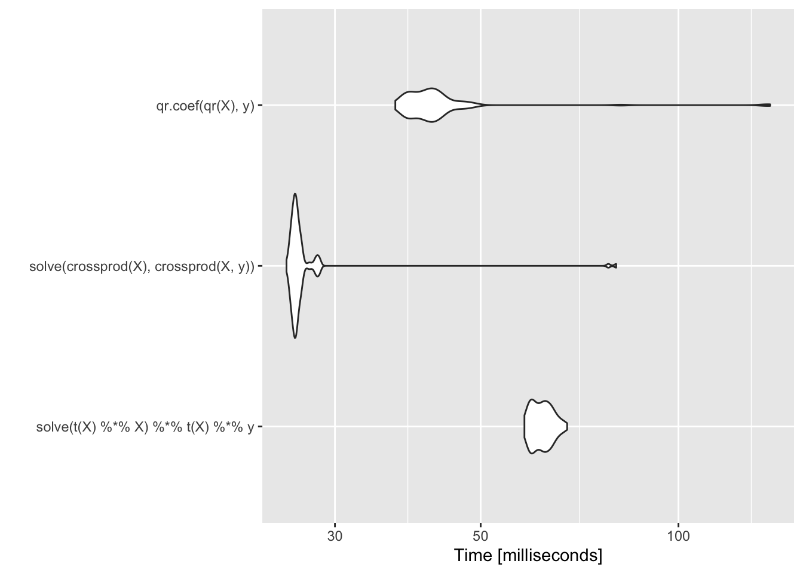

2 Notes of Optimization
2.1 Notes of Linear Regression
The following notes are from this BOOK. Most of the original references become from there.
Pending,
- Expand the Guassian elimination notes with an analytical example and an
Rcode - Expand the Gram-Schmidt process notes with an analytical example and an
Rcode.
2.2 Logarithms
Univariate normal distribution with mean \(\mu\) and variance \(\sigma^2\) is
\(f(x|\mu, \sigma^2)=\frac{1}{\sqrt{2\pi\sigma}}e^{-\frac{1}{2\sigma^2}(x-\mu)^2}\)
and in R we can compute this value as
dnorm(0, mean=0, sd=1); dnorm(0)
#> [1] 0.3989423
#> [1] 0.3989423Calculating the equation, we have
# Example 1
UniNorm <- function(x, mean=0, sigma=1){
#pi = 3.14159
output <- (1/sqrt(2*pi*sigma))*exp(-(1/2*(sigma)^2)*((x-mean)^2))
print(output)
}
UniNorm(0)
dnorm(0)
# Example 2
UniNorm(1)
dnorm(1)
#> [1] 0.3989423
#> [1] 0.3989423
#> [1] 0.2419707
#> [1] 0.2419707In practice, the exact number is not used, and the \(log\) is used instead. However, in some cases we do need the value in the original scale. Calculating densities with \(log\) is much more stable because when the exponential function is used the number become very small for the machine to represent (underflow), and if the ratio is used we could have also big numbers (overflow). The \(log\) (and then the \(exp\)) resolve some of these issues.
2.3 Linear Regression
We express the linear regression in matrix form as,
\(y = X \beta + \varepsilon\)
Were \(y\) is a vector of size \(n \times 1\) of observed response, \(X\) is the \(n \times p\) predictor matrix, \(\beta\) is the \(p \times 1\) coefficient vector, and \(\varepsilon\) is the \(n \times 1\) error vector.
To estimate \(\beta\) (via maximum likelihood or least square), is often written in matrix form as
\[ \hat{\beta}=(X'X)^{-1}X'y \]
Which could be estimated in R using solve to extract the inverse of the cross product matrix.
set.seed(1234)
X <- matrix(rnorm(5000 * 100), 5000, 100)
y <- rnorm(5000)
betahat <- solve(t(X) %*% X) %*% t(X) %*% y
head(betahat)
#> [,1]
#> [1,] 0.013075906
#> [2,] -0.002368796
#> [3,] -0.007509733
#> [4,] 0.004884836
#> [5,] 0.011336186
#> [6,] 0.007056535Computationally, this is very expensive!
Quick look of inverse matrixes to understand the following equation: \(\hat{\beta}=(X'X)^{-1}X'y\)
First, recall that not all square matrixes are inversible, and that there are some properties of the inverse matrix such as:
- \(AA^{-1}=I=A^{-1}A\)
- \((AB)^{-1}=B^{-1}A^{-1}\)
- \((A^{T})^{-1}=(A^{-1})^{T}\)
Let use an example to disentangle some of the properties! First,
\[ A = \begin{pmatrix} a & b \\ c & d \end{pmatrix} \]
and
\[ A^{-1} = \begin{pmatrix} x_{1} & x_{2} \\ y_{1} & y_{2} \end{pmatrix} \]
we also know that
\[ I = \begin{pmatrix} 1 & 0 \\ 0 & 1 \end{pmatrix} \]
All together and considering \((1)\) we have
\[ AA^{-1}=I=A^{-1}A= \begin{pmatrix} a & b \\ c & d \end{pmatrix} \begin{pmatrix} x_{1} & x_{2} \\ y_{1} & y_{2} \end{pmatrix} = \begin{pmatrix} 1 & 0 \\ 0 & 1 \end{pmatrix} = \begin{pmatrix} x_{1} & x_{2} \\ y_{1} & y_{2} \end{pmatrix} \begin{pmatrix} a & b \\ c & d \end{pmatrix} \]
Now, solving the linear system of equation we have
- \(ax_{1}+by_{1}=1\)
- \(ax_{2}+by_{2}=0\)
- \(cx_{1}+dy_{1}=0\)
- \(cx_{2}+dy_{2}=1\)
Also, re-arranging some of the terms and doing some elementary row operations we have for:
- \(ax_{2}+by_{2}=0\)
That,
\[ y_{2}=\frac{-a}{b}x_{2} \]
and
- \(cx_{1}+dy_{1}=0\)
\[ y_{1}=\frac{-c}{d}x_{1} \]
Now,
- \(ax_{1}+by_{1}=1\)
we could replace some terms in such a way that,
\[ ax_{1}-\frac{bc}{d}x_{1}=1 \]
and
\[ x_{1}=\frac{d}{ad-bc} \]
then
\[ y_{1}=\frac{-c}{ad-bc} \]
Also,
\[ \frac{c}{b}x_{2}-\frac{ad}{b}x_{2}=1 \]
is expressed as
\[ x_{2}=\frac{b}{bc-ad} \]
and
\[ y_{2}=\frac{a}{ad-bc} \]
Puting all together we have the inverse of the matrix
\[ A^{-1}= \frac{1}{ad-bc} \begin{pmatrix} d & -b \\ -c & a \end{pmatrix} \]
And, considering that the determinant is,
\[ |A| = \begin{vmatrix} a & b \\ c & d \end{vmatrix} = ad-bc \]
If the resulting value of \(ad-bc=0\), then the matrix is not invertible (is singular or degenerate)
In R all this calculation is just a simple function. For example,
set.seed(1234)
X <- matrix(rnorm(100 * 100), 100, 100)
inv_X <- solve(X)A better option that is less computationally demanding is re-arranging the terms in the following way:
\[ X'X\beta = X'y \]
Which, gives the same result
set.seed(1234)
X <- matrix(rnorm(5000 * 100), 5000, 100)
betahat <- solve(crossprod(X), crossprod(X, y))
head(betahat)
#> [,1]
#> [1,] 0.013075906
#> [2,] -0.002368796
#> [3,] -0.007509733
#> [4,] 0.004884836
#> [5,] 0.011336186
#> [6,] 0.0070565352.3.1 Gaussian elimination
The difference between computing the inverse of \(X'X\), and using a Gaussian elimination to compute \(\hat{\beta}\) is that the solution is numerically more stable and faster. Also, if there are high colinearity amongst the predictors, then the results would be unstable if the inverse in \(X'X\) is used.
PENDING!!!! (check my algebra notebook)
Quick look of Guassian elimination (or row reduction): algorithm to solve linear equations.
The idea is to use elementary row operations and modify te matrix to produce a “triangular” matrix with zeros in the bottom left corner (achieving a upper triangular matrix), that is said to be in a reduced row echelon form.
For example, we could try the back substitution in an augmented matrix
PENDING: edit the matrix R1(ccc|c) \[ \begin{array}{ccc|c} 1 & -1 & 5 & -9 \\ 2 & -1 & -3 & -19 \\ 3 & 1 & 4 & -13 \end{array} \]
Consiering that we have three rows (\(R1, R2, R3\))…
I JUST ADD HERE A NICE MATRIX!!!:
\[ A = \begin{matrix}\begin{pmatrix}x & y\end{pmatrix}\\\mbox{}\end{matrix} \begin{pmatrix} a & b \\ c & d \end{pmatrix} \begin{pmatrix} x \\ y \end{pmatrix} \]
# Data
A <- matrix(c(2,-5,4,1,-2.5,1,1,-4,6),byrow=T,nrow=3,ncol=3)
b <- matrix(c(-3,5,10),nrow=3,ncol=1)
p <- nrow(A)
(U.pls <- cbind(A,b))
# Gaussian Elimination
U.pls[1,] <- U.pls[1,]/U.pls[1,1]
i <- 2
while (i < p+1) {
j <- i
while (j < p+1) {
U.pls[j, ] <- U.pls[j, ] - U.pls[i-1, ] * U.pls[j, i-1]
j <- j+1
}
while (U.pls[i,i] == 0) {
U.pls <- rbind(U.pls[-i,],U.pls[i,])
}
U.pls[i,] <- U.pls[i,]/U.pls[i,i]
i <- i+1
}
for (i in p:2){
for (j in i:2-1) {
U.pls[j, ] <- U.pls[j, ] - U.pls[i, ] * U.pls[j, i]
}
}
U.pls
# Check:
library(pracma)
rref(cbind(A, b))
#> [,1] [,2] [,3] [,4]
#> [1,] 2 -5.0 4 -3
#> [2,] 1 -2.5 1 5
#> [3,] 1 -4.0 6 10
#> [,1] [,2] [,3] [,4]
#> [1,] 1 0 0 -51.0
#> [2,] 0 1 0 -25.0
#> [3,] 0 0 1 -6.5
#> [,1] [,2] [,3] [,4]
#> [1,] 1 0 0 -51.0
#> [2,] 0 1 0 -25.0
#> [3,] 0 0 1 -6.5Comparing both strategies, we could check that the Gaussian elimination in comparisson with the other strategy is less time consuming
library(microbenchmark)
library(magrittr)
set.seed(1234)
X <- matrix(rnorm(5000 * 100), 5000, 100)
microbenchmark(
inverse = solve(t(X) %*% X) %*% t(X) %*% y,
gaussian = solve(crossprod(X), crossprod(X, y))
) %>% summary(unit = "ms") %>% knitr::kable(format = "markdown")| expr | min | lq | mean | median | uq | max | neval | cld |
|---|---|---|---|---|---|---|---|---|
| inverse | 85.75258 | 93.64495 | 103.03926 | 98.08822 | 105.50272 | 263.36540 | 100 | b |
| gaussian | 27.93382 | 28.76065 | 31.27557 | 29.12637 | 30.31611 | 58.34899 | 100 | a |
On the other hand, the Gaussian elimination would breaks down when there is collinearity in the \(X\) matrix. Meaning that the column \(X\) would be very similar, but not identical, to the first column of \(X\). For example,
set.seed(127893)
X <- matrix(rnorm(5000 * 100), 5000, 100)
W <- cbind(X, X[, 1] + rnorm(5000, sd = 0.0000000001))
solve(crossprod(W), crossprod(W, y))
#> Error in solve.default(crossprod(W), crossprod(W, y)): system is computationally singular: reciprocal condition number = 1.47235e-16In this case, the cross product matrix \(W'W\) is singular (determinant is \(0\))
2.3.2 QR decomposition
R use as a default the QR decomposition, that is not fast, but can detect and handle colinear columns in the matrix.
Quick look of orthogonal matrix to understand the QR decomposition (also known as QR factorization or QU factorization): \(A=QR\).
To work out with the orthogonal vector, we often work with orthonormal vectors. That assumes that all the vectors have lenght \(1\) (\(||v_{1}||=1\), \(||v_{1}||^{2}=1\) or \(v_{1}v_{2}=1\) for \(i, 1,2,...k\)). Therefore, they have all been “normalized” (unit vectors).
Two vectors \(v_{1}\) and \(v_{2}\), are said to be orthogonal if \(\langle v_{1},v_{2} \rangle = 0\) (sometime expressed as \(v_{1} \perp v_{2}\))
A set of nonzero vectors that are mutually orthogonal are necessarily linearly independent. Meaning that each vector in one is orthogonal to every vector in the other, and said to be normal to that space (normal vector).
Assuming that we have a vector
\[ v_{1} = \begin{pmatrix} 1/3 \\ 2/3 \\ 2/3 \end{pmatrix} \]
and
\[ v_{1} = \begin{pmatrix} 2/3 \\ 1/3 \\ -2/3 \end{pmatrix} \]
and \(B=\{v_{1}, v_{2}\}\).
What is the lenght of \(v_{1}\) and \(v_{2}\)?
\(||v_{1}||^2=v_{1}v_{2}=1/9+4/9+4/9=1\) and \(||v_{2}||^2=4/9+1/9+4/9=1\). We know that we have a normalized set \(B\).
Are they orthogonal? \(v_{1}v_{2}=2/9+2/9+-4/9=0\)
If we know that we have a space, such as \(V=span(v_{1},v_{2})\), the we can say that \(B\) is an ortohonormal basis for \(V\).
We do know that the QR decomposition decompose a matrix \(A\) into a product \(A=QR\) of an othogonal matrix \(Q\) and an upper triangular matrix \(R\).
Quick look of the Gram-Schmidt process to compute the QR decomposition.
PENDING!!!! (check my algebra notebook)
Knowing that \(X\) can be decomposed as \(X=QR\), the linear regression
\[ X'X\beta = X'y \]
can be writted as
\[ R'Q'QR'\beta = R'Q'y \\ R'R\beta = R'Q'y \\ R\beta = Q'y \]
Considering that \(Q'Q=I\), now we have a simpler equation that does not longer require to compute the cross product. Also, due the QR decomposition \(R\) is upper triangular and, therefore, we can solve \(\beta\) via Gaussian elimination. Some of the benefits are that the cross product \(X'X\) was numerically unstable if it is not properly centered or scaled.
To compute the singular matrix \(W\) of the example, the QR decomposition continous without error. Notices that the ouput have \(100\) and not \(101\) ranks, this is because the colinear column.
Qw <- qr(W)
str(Qw)
#> List of 4
#> $ qr : num [1:5000, 1:101] -7.04e+01 -1.15e-02 -8.27e-05 6.89e-03 -1.13e-02 ...
#> $ rank : int 100
#> $ qraux: num [1:101] 1.03 1.01 1.03 1.01 1.02 ...
#> $ pivot: int [1:101] 1 2 3 4 5 6 7 8 9 10 ...
#> - attr(*, "class")= chr "qr"After understanding the QR decomposition for the matrix, we can now solve the regression equation to estimate \(\hat{\beta}\) using R:
betahat <- qr.coef(Qw, y)
tail(betahat, 1)
#> [1] NANotices that the last element in the position \(101\) is NA due the colliniarity. Meaning that the coefficient could not be calculated.
This approach helps with colliniarity, is better and more stable. However, is slower:
library(ggplot2)
library(microbenchmark)
m <- microbenchmark(solve(t(X) %*% X) %*% t(X) %*% y,
solve(crossprod(X), crossprod(X, y)),
qr.coef(qr(X), y))
autoplot(m)
2.4 Multivariate Normal Distribution
The p-dimensional multivariate Normal density is written as \[ \begin{aligned} \varphi(x|\mu, \Sigma)=-\frac{p}{2}log|\Sigma|-\frac{1}{2}(x-\mu)'\Sigma ^{ -1}(x-\mu) \end{aligned} \]
Quick look of the multivariate Normal density.
Considering that the Gaussian or normal distribution for the univariate case is \(f(x|\mu, \sigma^2)=\frac{1}{\sqrt{2\pi\sigma}}e^{-\frac{1}{2\sigma^2}(x-\mu)^2}\)
With parameters: mean \(\mu\) and variance \(\sigma^{2}\) (standard deviation \(\sigma\)). We know that the maximum likelihood estimates are \[ \begin{aligned} \hat{\mu}=\frac{1}{N}\sum_{i}x^{(i)} \\ \hat{\sigma}^{2}=\frac{1}{N}\sum_{i}(x^{(i)}-\hat{\mu})^{2} \end{aligned} \]
Then, we have the multivariate Normal density which is the extension of this model to vector value random variables in a multidimensional space. In which \(x\) would be a vector with \(d\) values, with \(\mu\) as the length-d row vector, and \(\Sigma\) a \(d \times d\) matrix.Remember that \(|\Sigma|\) is the determinant matrix of the covariants,
The maximum likelihood are similar to the univariate case \[ \begin{aligned} \hat{\mu}=\frac{1}{m}\sum_{j}x^{(j)} \\ \hat{\Sigma}^{2}=\frac{1}{m}\sum_{j}(x^{(j)}-\hat{\mu})^{T}(x^{(j)}-\hat{\mu}) \end{aligned} \] Where \(\Sigma\) is the average of the \(d \times d\) matrix (outer product).
For example,
If we have two independent Gaussian variables \(x_{1}\) and \(x_{2}\), normalized with a \(Z\) constant \[ \begin{aligned} p(x_{1})=\frac{1}{Z_{1}}exp\{-\frac{1}{2\sigma^{2}_{1}}(x_{1}-\mu_{1})^{2}\} \\ p(x_{2})=\frac{1}{Z_{2}}exp\{-\frac{1}{2\sigma^{2}_{2}}(x_{2}-\mu_{2})^{2}\} \end{aligned} \] We can a new vector concatenating the two vectors, \(x=[x_{1}x_{2}]\) we can ask for the distribution of \(x\) assuming that \(x_{1}\) and \(x_{2}\) are independents. Then, the joint distribution is the product of the individual distributions. Then, we have \[ p(x_{1})p(x_{2})=\frac{1}{Z_{1}Z_{2}}exp\{-\frac{1}{2}\}(x-\mu)^{T}\Sigma^{-1}(x-\mu) \\ \mu=[\mu_{1}\mu_{2}] \\ \Sigma = diag(\sigma^{2}_{1}, \sigma^{2}_{2}) \\ \Sigma=\begin{pmatrix} \sigma^{2}_{11} & 0 \\ 0 & \sigma^{2}_{22} \end{pmatrix} \]
From the multivariate Normal density equation, the most time-consuming part is the quadratic form \[ (x-\mu)'\Sigma^{-1}(x-\mu) = z'\Sigma^{-1}z \\ z=x-\mu \]
Similarly to the regression example above is the inversion of the of the p-dimensional covariance matrix \(\Sigma\). Taking \(z\) as a \(p \times 1\) column vector, then in R this could be expressed as
t(z) %*% solve(Sigma) %*% z2.4.1 Choleskey decomposition
Rather than using the literal equation, a similar approach is using the Choleskey decomposition of \(\Sigma\).
Quick look of the Choleskey decomposition or Choleskey factorization.
here Recall that if all the eigenvalues of \(A\) are positive, or if \(x^{T}Ax\) is positive for all non-zero vector \(x\) (which is equivalent), then we assume that a symmetric \(n \times n\) matrix \(A\) is positive definite. If a matrix is positive definite, then it could be defined as \(A=X'X\) for a non-singular (non-invertible) matrix \(X\).
PENDING!!!! (check my algebra notebook)
Quick look of the eigenvalues.
PENDING!!!! (check my algebra notebook)
Using the Choleskey decomposition for a positive definite matrix on \(\Sigma\), we have \[ \Sigma = R'R \] were \(R\) is an upper triangular matrix (also called the square root of \(\Sigma\)). Using Choleskey decomposition on \(\Sigma\) and the rules of matrix algebra, the multivariate Normal density equation can be written as \[ z'\Sigma^{-1}z = z'(R'R)^{-1}z \\ = z'R^{-1}R'^{-1}z \\ = (R'^{-1}z)'R'^{-1}z \\ = v'v \] Where \(v=R'^{-1}z\) and is a \(p \times 1\) vector. Also, to avoid inverting \(R'^{-1}\) by computing \(v\) as solution of the linear system \[ R'v=z \] Then, computing \(v\), we can compute \(v'v\), which is simply the cross-product of two p-dimensional vectors.
One of the benefits of using Choleskey decomposition is that gives a way of computing the log-determinant of \(\Sigma\). Where the log-determinant of \(\Sigma\) is simply \(2\) times the sum of the log of the diagional elements of \(R\). Implementing this in a function
set.seed(93287)
z <- matrix(rnorm(200 * 100), 200, 100)
S <- cov(z)
quad.naive <- function(z, S) {
Sinv <- solve(S)
rowSums((z %*% Sinv) * z)
}
library(dplyr)
quad.naive(z, S) %>% summary
#> Min. 1st Qu. Median Mean 3rd Qu. Max.
#> 76.78 93.31 99.78 100.34 107.33 129.04Now, a version that use the Choleskey decomposition
quad.chol <- function(z, S) {
R <- chol(S)
v <- backsolve(R, t(z), transpose = TRUE)
colSums(v * v)
}
quad.chol(z, S) %>% summary
#> Min. 1st Qu. Median Mean 3rd Qu. Max.
#> 76.78 93.31 99.78 100.34 107.33 129.04Comparing both approaches
library(microbenchmark)
microbenchmark(quad.naive(z, S), quad.chol(z, S))
#> Unit: milliseconds
#> expr min lq mean median uq max neval
#> quad.naive(z, S) 3.085939 3.251968 4.574137 3.461480 4.986992 20.40842 100
#> quad.chol(z, S) 1.474169 1.574538 2.960061 2.004181 2.811306 31.29867 100
#> cld
#> b
#> aThe Choelsky decomposition is faster. Also, because we know that the covariance matrix in a multivariate Normal is symmetric and positive define we can use the Choleskey decomposition. The naive version does not have that information, therefore, inverte the matrix and takes more time to estimate!